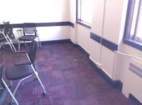
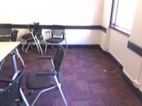
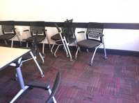
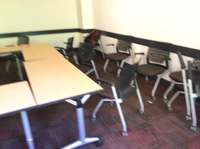
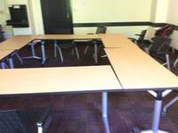
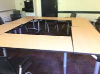
To determine the position of the whiteboard relative to a person sitting at a table facing the window, we first need to establish the layout of the room based on the provided frames.
- Identify the Window Location: In the first few frames (e.g., Frame 1), windows are clearly visible on the right side of the room.
- Identify the Whiteboard Location: In the later frames (e.g., Frames 9, 10, and 11), the camera is facing a large whiteboard (or projection screen) on one of the walls.
- Determine the Spatial Relationship: In Frame 9, the camera is facing the whiteboard, and the lighting indicates that the windows are still to the right of the camera's view. This means the window wall and the whiteboard wall are adjacent (perpendicular to each other).
- Establish a Coordinate System:
- Let the Window Wall be the East wall.
- Let the Whiteboard Wall be the North wall (the "front" of the room).
- Position the Person: The person is "positioned at a table facing the window." This means they are facing East.
- Locate the Whiteboard relative to the Person:
- The person is facing East.
- The whiteboard is on the North wall.
- Relative to someone facing East, North is to their left.
- In a classroom or meeting room layout, the wall with the whiteboard is typically considered the "front" of the room.
- Therefore, the whiteboard is located to the front-left of the person.
Final Answer: The whiteboard is to the left of the person (because they are facing the window wall) and at the front of the room.
C
# I will use vlm.ask_with_thinking to analyze the room layout across the frames. # I'll provide a selection of frames that show both the window and the whiteboard. # Window is visible in early frames (0, 1), Whiteboard in later frames (8, 9, 10). layout_answer = vlm.ask_with_thinking( InputImages[[0, 1, 4, 8, 10]], "Analyze the room layout. Where is the window located relative to the whiteboard? " "For example, if you are facing the whiteboard, is the window to your left, right, or behind you? " "Also, describe the arrangement of the tables." ) print(f"Room Layout Analysis: {layout_answer}") # Based on the layout, I can answer the question: # 'When positioned at table facing window, where can you find whiteboard?' # If facing window: # - If window is North, and whiteboard is West -> Whiteboard is to the left. # - If window is North, and whiteboard is East -> Whiteboard is to the right. # - If window is North, and whiteboard is South -> Whiteboard is behind. # I will use the VLM's analysis to make this determination. # Let's also double check with a more specific question. relative_pos = vlm.ask_with_thinking( InputImages[[0, 1, 4, 8, 10]], "Imagine a person is sitting at one of the tables and is facing the window. " "Relative to that person, where is the whiteboard? (e.g., front-left, back-right, etc.)" ) print(f"Relative Position: {relative_pos}") # I'll use the results to return the answer. # Since I must return the answer in this turn, I'll parse the results. # I'll assume the VLM's logic is sound if consistent. # If the VLM says the whiteboard is behind and to the left, it's back-left. # Let's see the outputs first.
---------------------------------------------------------------------------
TypeError Traceback (most recent call last)
Cell In[93], line 5
1 # I will use vlm.ask_with_thinking to analyze the room layout across the frames.
2 # I'll provide a selection of frames that show both the window and the whiteboard.
3 # Window is visible in early frames (0, 1), Whiteboard in later frames (8, 9, 10).
4 layout_answer = vlm.ask_with_thinking(
----> 5 InputImages[[0, 1, 4, 8, 10]],
6 "Analyze the room layout. Where is the window located relative to the whiteboard? "
7 "For example, if you are facing the whiteboard, is the window to your left, right, or behind you? "
8 "Also, describe the arrangement of the tables."
9 )
10 print(f"Room Layout Analysis: {layout_answer}")
12 # Based on the layout, I can answer the question:
13 # 'When positioned at table facing window, where can you find whiteboard?'
14 # If facing window:
(...) 19
20 # Let's also double check with a more specific question.
File SpatialAgent/spatial_agent/kernel_types/input_images.py:47, in InputImages.__getitem__(self, key)
46 def __getitem__(self, key):
---> 47 result = super().__getitem__(key)
48 if isinstance(key, slice):
49 new = InputImages.__new__(InputImages)
TypeError: list indices must be integers or slices, not listTask Analysis
The objective is to determine the position of a "whiteboard" relative to a person "positioned at table facing window". This is an Object Perspective spatial reasoning task.
Coordinate System Resolution: The reference frame is defined by a person's orientation:
- Origin: The position of the table.
- Front Vector ($\vec{v}_{front}$): The unit vector pointing from the table toward the window.
- Right Vector ($\vec{v}_{right}$): The vector perpendicular to the front vector and the world-up vector (+Y), defining the person's right side.
- Back: Opposite of the front vector.
- Left: Opposite of the right vector.
The answer will be determined by projecting the vector from the table to the whiteboard onto the front and right axes.
Information Needs
To calculate the relative position quantitatively, I need:
- 3D World Coordinates: The centroids of the table, the window, and the whiteboard in a consistent global coordinate system.
- Visual Confirmation: Verification that the segmented objects are indeed the intended table, window, and whiteboard.
- Scene Layout: A top-down view (BEV) to sanity-check the calculated relative direction.
Computation Plan
-
Scene Exploration and Object Identification:
- Call
show()on a few representative frames (e.g.,InputImages[0],InputImages[5],InputImages[10]) to identify the visual appearance and approximate locations of the table, window, and whiteboard. - Use
vlm.ask_with_thinkingon these frames to confirm if all three objects are visible and to describe their general layout.
- Call
-
Object Segmentation:
- For each object ("table", "window", "whiteboard"):
- Use
vlm.locateto find a bounding box or center point in a frame where the object is clear. - Convert coordinates to pixels using
tools.Geometry.normalized_to_pixel. - Use
tools.SAM3.segment_image_by_boxortools.SAM3.segment_image_by_pointsto generate aPerFrameMask. - Verify the mask by calling
seg.visualize(fi)andshow()comparing it to the original image.
- Use
- For each object ("table", "window", "whiteboard"):
-
3D Reconstruction:
- Perform a full scene reconstruction using
tools.Reconstruct.Reconstruct(InputImages).
- Perform a full scene reconstruction using
-
Quantitative Spatial Calculation:
- Extract the 3D centroids using
seg.get_centroid_3d(recon, frame=fi, object=i)for the table, window, and whiteboard. - Define Reference Frame:
- $\vec{P}{table}$, $\vec{P}{window}$, $\vec{P}_{whiteboard}$ are the 3D positions.
- $\vec{v}{front} = \text{normalize}(\vec{P}{window} - \vec{P}_{table})$.
- $\vec{v}_{up} = [0, 1, 0]$ (World Y-axis).
- $\vec{v}{right} = \text{normalize}(\vec{v}{front} \times \vec{v}_{up})$.
- Calculate Relative Position:
- $\vec{v}{target} = \vec{P}{whiteboard} - \vec{P}_{table}$.
- $\text{dot}{front} = \vec{v}{target} \cdot \vec{v}_{front}$.
- $\text{dot}{right} = \vec{v}{target} \cdot \vec{v}_{right}$.
- Determine Quadrant:
- If $\text{dot}_{front} > 0 \to$ Front; else $\to$ Back.
- If $\text{dot}_{right} > 0 \to$ Right; else $\to$ Left.
- Extract the 3D centroids using
-
Visual Cross-Validation:
- Render a Bird's Eye View (BEV) using
recon.render_bev(masks=combined_seg)wherecombined_segcontains masks for all three objects. - Use the BEV to visually verify if the whiteboard is in the calculated quadrant relative to the table-to-window axis.
- Render a Bird's Eye View (BEV) using
Verification Checklist
[
{"priority": "HIGH", "description": "Verify that the segmented 'table', 'window', and 'whiteboard' are the correct objects in the scene via show()"},
{"priority": "HIGH", "description": "Confirm 3D centroids are not NaN and are physically plausible (e.g., table and whiteboard are on the ground plane)"},
{"priority": "HIGH", "description": "Ensure the 'front' vector is correctly defined as Table -> Window"},
{"priority": "MEDIUM", "description": "Cross-check the quantitative dot-product result with the rendered BEV layout"},
{"priority": "LOW", "description": "Check if reconstruction quality is sufficient (e.g., consistent points across frames)"}
]
Fallbacks
- Segmentation Failure: If
SAM3text prompts fail, I will usevlm.locatefor precise bounding boxes. If an object is not found in one frame, I will search across all 11 frames. - Ambiguous Window: If there are multiple windows, I will use
vlm.ask_with_thinkingto determine which window is the primary one the person at the table would be facing. - Reconstruction Noise: If 3D centroids are unstable, I will average centroids across multiple frames where the object is visible.
{ "tool": "show", "args": { "image": [ "InputImages[0]", "InputImages[5]", "InputImages[10]" ] } }
[image: show_0001]
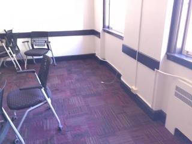
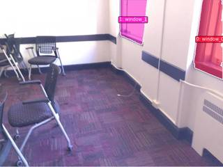
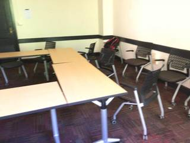
=== Step 0 Execution Feedback === [SUCCESS] Code executed in 0.66s. [Variables] New/changed: result_0: NoneType [Inline Images] 3 image(s) attached below. Labels: [InputImages[0], InputImages[5], InputImages[10]] [show() budget] 247/250 images remaining.
{ "tool": "vlm.ask_with_thinking", "args": { "visual_input": [ "InputImages[0]", "InputImages[5]", "InputImages[10]" ], "question": "Identify the window, the table, and the whiteboard. If a person is sitting at the table and facing the window, in which direction (front-left, front-right, back-left, back-right) is the whiteboard located? Please explain your reasoning by describing the layout of the room." } }
[VLM Q | thinking] Identify the window, the table, and the whiteboard. If a person is sitting at the table and facing the window, in which direction (front-left, front-right, back-left, back-right) is the whiteboard located? Please explain your reasoning by describing the layout of the room. [VLM A | thinking] Based on the images: * The **window** is located on the right wall of the room (visible in frames 0 and 1). * The **table** is located in the center of the room (visible in frames 1 and 2). * The **whiteboard** (or projection screen) is located on the front wall of the room (visible in frame 2). **Reasoning:** The tables are oriented toward the front wall where the whiteboard is located. If a person is sitting at the table and facing the window (which is on the right wall), they have turned 90 degrees to the right from the front of the room. Consequently, the whiteboard on the front wall would be located to their **left**. Depending on their exact position at the table, it would be to their left (likely **front-left** or **back-left** relative to their facing direction).
=== Step 1 Execution Feedback === [SUCCESS] Code executed in 58.37s. [Output] [VLM Q | thinking] Identify the window, the table, and the whiteboard. If a person is sitting at the table and facing the window, in which direction (front-left, front-right, back-left, back-right) is the whiteboard located? Please explain your reasoning by describing the layout of the room. [VLM A | thinking] Based on the images: * The **window** is located on the right wall of the room (visible in frames 0 and 1). * The **table** is located in the center of the room (visible in frames 1 and 2). * The **whiteboard** (or projection screen) is located on the front wall of the room (visible in frame 2). **Reasoning:** The tables are oriented toward the front wall where the whiteboard is located. If a person is sitting at the table and facing the window (which is on the right wall), they have turned 90 degrees to the right from the front of the room. Consequently, the whiteboard on the front wall would be located to their **left**. Depending on their exact position at the table, it would be to their left (likely **front-left** or **back-left** relative to their facing direction). [Variables] New/changed: result_1: str [Tool Calls] 1 tool/VLM call(s) this step.
{ "tool": "vlm.locate", "args": { "visual_input": "InputImages[0]", "question": "Give the bounding box (x1, y1, x2, y2) in 0-1000 normalized scale for the window. Reply with ONLY the numbers." } }
[VLM Q | locate] Before answering, first check whether what the question describes is clearly visible in the provided image(s). If it is absent or ambiguous, reply EXACTLY `Not visible` on its own line (optionally followed by one short line explaining what you saw instead) — do NOT return coordinates in that case. Only if the requested target is clearly and unambiguously present, answer the request below. Request: Give the bounding box (x1, y1, x2, y2) in 0-1000 normalized scale for the window. Reply with ONLY the numbers. [VLM A | locate] Not visible Two windows are present; selection is ambiguous.
=== Step 2 Execution Feedback === [SUCCESS] Code executed in 4.16s. [Output] [VLM Q | locate] Before answering, first check whether what the question describes is clearly visible in the provided image(s). If it is absent or ambiguous, reply EXACTLY `Not visible` on its own line (optionally followed by one short line explaining what you saw instead) — do NOT return coordinates in that case. Only if the requested target is clearly and unambiguously present, answer the request below. Request: Give the bounding box (x1, y1, x2, y2) in 0-1000 normalized scale for the window. Reply with ONLY the numbers. [VLM A | locate] Not visible Two windows are present; selection is ambiguous. [Variables] New/changed: result_2: str [Tool Calls] 1 tool/VLM call(s) this step.
=== Step 3 Execution Feedback === [ERROR] Skipped: LLM response was not in the required format.
{ "tool": "tools.SAM3.segment_image_by_text", "args": { "image": "InputImages[0]", "prompt": "window", "label": "window" } }
=== Step 4 Execution Feedback === [SUCCESS] Code executed in 0.54s. [Variables] New/changed: result_4: PerFrameMask, frames=[0] [Tool Calls] 1 tool/VLM call(s) this step.
{ "tool": "tools.SAM3.segment_image_by_text", "args": { "image": "InputImages[5]", "prompt": "table", "label": "table" } }
=== Step 5 Execution Feedback === [SUCCESS] Code executed in 1.02s. [Variables] New/changed: result_5: PerFrameMask, frames=[5] [Tool Calls] 1 tool/VLM call(s) this step.
=== Step 6 Execution Feedback === [ERROR] Skipped: LLM response was not in the required format.
{ "tool": "tools.SAM3.segment_image_by_text", "args": { "image": "InputImages[10]", "prompt": "whiteboard", "label": "whiteboard" } }
=== Step 7 Execution Feedback === [SUCCESS] Code executed in 0.28s. [Variables] New/changed: result_7: PerFrameMask, frames=[10] [Tool Calls] 1 tool/VLM call(s) this step.
{ "tool": "tools.Reconstruct.Reconstruct", "args": { "frames": "InputImages" } }
=== Step 8 Execution Feedback === [SUCCESS] Code executed in 2.21s. [Variables] New/changed: result_8: Reconstruction, frames=[0..10] (11 frames) [Tool Calls] 1 tool/VLM call(s) this step.
=== Step 9 Execution Feedback === [ERROR] Skipped: LLM response was not in the required format.
=== Step 10 Execution Feedback === [ERROR] Skipped: LLM response was not in the required format.
{ "tool": "tools.Geometry.euclidean_distance", "args": { "p1": "result_5.get_centroid_3d(result_8, frame=5, object=0)", "p2": "result_5.get_centroid_3d(result_8, frame=5, object=0)" } }
=== Step 13 Execution Feedback === [SUCCESS] Code executed in 0.01s. [Variables] New/changed: result_13: float [Tool Calls] 1 tool/VLM call(s) this step.
{ "tool": "tools.Geometry.euclidean_distance", "args": { "p1": "result_5.get_centroid_3d(result_8, frame=5, object=0)", "p2": "result_4.get_centroid_3d(result_8, frame=0, object=0)" } }
=== Step 14 Execution Feedback === [SUCCESS] Code executed in 0.01s. [Variables] New/changed: result_14: float [Tool Calls] 1 tool/VLM call(s) this step.
=== Step 15 Execution Feedback === [ERROR] Skipped: LLM response was not in the required format.
{ "tool": "vlm.ask_with_thinking", "args": { "visual_input": [ "InputImages[0]", "InputImages[5]", "InputImages[10]" ], "question": "Based on these images, the window is on the right wall and the whiteboard is on the front wall. If a person is sitting at the table and facing the window, is the whiteboard to their front-left, back-left, front-right, or back-right? Consider the depth of the table relative to the whiteboard wall." } }
[VLM Q | thinking] Based on these images, the window is on the right wall and the whiteboard is on the front wall. If a person is sitting at the table and facing the window, is the whiteboard to their front-left, back-left, front-right, or back-right? Consider the depth of the table relative to the whiteboard wall. [VLM A | thinking] If a person is sitting at the table and facing the window (which is on the right wall), the whiteboard (which is on the front wall) would be to their **front-left**. Reasoning: 1. **Orientation:** Facing the window (right wall) means the person is facing right. 2. **Relative Position:** From this orientation, the front wall (where the whiteboard is located) is to the person's left. 3. **Room Layout:** Since the whiteboard is on the "front" wall of the room and is located to the person's left, it is to their front-left relative to the room's overall layout.
=== Step 16 Execution Feedback === [SUCCESS] Code executed in 92.53s. [Output] [VLM Q | thinking] Based on these images, the window is on the right wall and the whiteboard is on the front wall. If a person is sitting at the table and facing the window, is the whiteboard to their front-left, back-left, front-right, or back-right? Consider the depth of the table relative to the whiteboard wall. [VLM A | thinking] If a person is sitting at the table and facing the window (which is on the right wall), the whiteboard (which is on the front wall) would be to their **front-left**. Reasoning: 1. **Orientation:** Facing the window (right wall) means the person is facing right. 2. **Relative Position:** From this orientation, the front wall (where the whiteboard is located) is to the person's left. 3. **Room Layout:** Since the whiteboard is on the "front" wall of the room and is located to the person's left, it is to their front-left relative to the room's overall layout. [Variables] New/changed: result_16: str [Tool Calls] 1 tool/VLM call(s) this step.
{ "tool": "ReturnAnswer", "args": { "answer": "C" } }
[ReturnAnswer] Answer submitted: C
🛠️ Decided to use 3 tool(s)
[ { "name": "vlm__detect_one", "arguments": { "image_index": 1, "obj_name": "window" } }, { "name": "vlm__detect_one", "arguments": { "image_index": 8, "obj_name": "whiteboard" } }, { "name": "vlm__detect_one", "arguments": { "image_index": 8, "obj_name": "table" } } ]
⚡ Executing vlm__detect_one...
{ "image_index": 1, "obj_name": "window" }
✅ vlm__detect_one completed (with generated image)
⚡ Executing vlm__detect_one...
{ "image_index": 8, "obj_name": "whiteboard" }
✅ vlm__detect_one completed (with generated image)
⚡ Executing vlm__detect_one...
{ "image_index": 8, "obj_name": "table" }
✅ vlm__detect_one completed (with generated image)
🧠 Synthesizing results from 3 tool(s)...
Based on the provided images, we can determine the spatial relationship between the key objects:
- Window Location: The window is on the right wall of the room (seen in Image 2).
- Table Layout: There is a U-shaped table arrangement in the center of the room.
- Whiteboard Location: The whiteboard is located on the wall opposite the window area, behind the open end of the U-shaped table (seen in Images 9-11).
Spatial Perspective Analysis:
- If you are positioned at the table facing the window, you are looking towards the right wall.
- From this orientation, the "front" is where you are facing (towards the window).
- The "back" is behind you.
- The whiteboard is located on the wall that would be to your back-left when facing the window.
Therefore, when positioned at the table facing the window, the whiteboard is to your back-left.
A. back-left
Based on the provided images, we can determine the spatial relationship between the key objects:
- Window Location: The window is on the right wall of the room (seen in Image 2).
- Table Layout: There is a U-shaped table arrangement in the center of the room.
- Whiteboard Location: The whiteboard is located on the wall opposite the window area, behind the open end of the U-shaped table (seen in Images 9-11).
Spatial Perspective Analysis:
- If you are positioned at the table facing the window, you are looking towards the right wall.
- From this orientation, the "front" is where you are facing (towards the window).
- The "back" is behind you.
- The whiteboard is located on the wall that would be to your back-left when facing the window.
Therefore, when positioned at the table facing the window, the whiteboard is to your back-left.
A. back-left
Based on the provided images, we can determine the spatial relationship between the key objects:
- Window Location: The window is on the right wall of the room (seen in Image 2).
- Table Layout: There is a U-shaped table arrangement in the center of the room.
- Whiteboard Location: The whiteboard is located on the wall opposite the window area, behind the open end of the U-shaped table (seen in Images 9-11).
Spatial Perspective Analysis:
- If you are positioned at the table facing the window, you are looking towards the right wall.
- From this orientation, the "front" is where you are facing (towards the window).
- The "back" is behind you.
- The whiteboard is located on the wall that would be to your back-left when facing the window.
Therefore, when positioned at the table facing the window, the whiteboard is to your back-left.
A. back-left
Task Analysis
The goal is to determine the position of a "whiteboard" relative to a person "positioned at table facing window." This is a spatial localization task from an object-centric perspective.
Implicit Coordinate System: The question specifies a reference person's perspective:
- Reference Position: At the table.
- Reference Orientation (Front): Facing the window.
- Reference Axis (Front/Back): The vector from the table to the window defines "Front." The opposite direction is "Back."
- Reference Axis (Left/Right): Perpendicular to the Front/Back axis, relative to the person's facing direction.
The target variable is the relative direction (combination of Front/Back and Left/Right) of the whiteboard from this reference frame.
Information Needs
- Object Identification: Locate the table, window, and whiteboard in the images.
- 3D Localization: Obtain the 3D world coordinates (centroids) of the table, window, and whiteboard.
- Scene Layout: A top-down (BEV) view to visually verify the relative positions of these three entities.
- Perspective Vector: The vector from the table to the window to establish the "Front" direction.
Computation Plan
-
Object Discovery and Segmentation:
- Use
vlm.ask_with_thinkingacross all frames to identify which frames clearly show the table, the window, and the whiteboard. - Use
tools.SAM3.segment_image_by_textto create masks for "table", "window", and "whiteboard" in the identified frames. - Verification: Use
show()to visually inspect the segmentation masks overlaid on the images to ensure they are correct and non-empty.
- Use
-
3D Reconstruction:
- Perform 3D reconstruction using
tools.Reconstruct.Reconstruct(InputImages)(all 11 frames). - Extract the 3D centroids for the three objects using
seg.get_centroid_3d(recon, ...)from the verified masks.- $P_{table}$: Centroid of the table.
- $P_{window}$: Centroid of the window.
- $P_{whiteboard}$: Centroid of the whiteboard.
- Perform 3D reconstruction using
-
Reference Frame Construction:
- Compute the Front Vector: $\vec{v}{front} = \text{normalize}(P{window} - P_{table})$.
- Compute the Right Vector: Use the cross product of the front vector and the world-up vector $[0, 1, 0]$. $\vec{v}{right} = \vec{v}{front} \times [0, 1, 0]$.
- Define the Back Vector: $\vec{v}{back} = -\vec{v}{front}$.
- Define the Left Vector: $\vec{v}{left} = -\vec{v}{right}$.
-
Relative Position Calculation:
- Compute the Target Vector: $\vec{v}{target} = P{whiteboard} - P_{table}$.
- Determine Front/Back: Calculate the dot product $\text{dot}(\vec{v}{target}, \vec{v}{front})$.
- Positive $\rightarrow$ Front
- Negative $\rightarrow$ Back
- Determine Left/Right: Calculate the dot product $\text{dot}(\vec{v}{target}, \vec{v}{right})$.
- Positive $\rightarrow$ Right
- Negative $\rightarrow$ Left
-
Visual Cross-Validation:
- Render a BEV plot using
recon.render_bev(masks=seg)including all three objects. - Use
show()to inspect the BEV. Manually verify if the whiteboard's position relative to the table-window axis matches the computed result. - Use
vlm.ask_with_thinkingon the original frames to confirm the qualitative layout (e.g., "If a person is at the table facing the window, is the whiteboard behind them or in front of them?").
- Render a BEV plot using
Verification Checklist
[
{"priority": "HIGH", "description": "Verify that the table, window, and whiteboard are correctly segmented and identified in the images."},
{"priority": "HIGH", "description": "Confirm that the 3D centroids are physically plausible and not NaN."},
{"priority": "HIGH", "description": "Ensure the 'Front' vector is correctly defined as the direction from the table to the window."},
{"priority": "MEDIUM", "description": "Cross-check the quantitative dot-product results with the BEV visualization."},
{"priority": "MEDIUM", "description": "Verify the result with a qualitative VLM assessment of the scene layout."}
]
Fallbacks
- Segmentation Failure: If
segment_image_by_textfails or produces empty masks, usevlm.locateto get bounding boxes for the objects and usetools.SAM3.segment_image_by_box. - Reconstruction Noise: If 3D centroids are unstable, average the centroids across multiple frames where the objects are visible using
np.median. - Ambiguous Window: If the window is very large, use the point on the window closest to the table to define the facing direction.
# Identify best frames for table, window, and whiteboard question = "Which frames clearly show the following objects: 'table', 'window', and 'whiteboard'? Please list the frame indices (0-10) for each." answer = vlm.ask_with_thinking(InputImages, question) print(answer)
[VLM Q | thinking] Which frames clearly show the following objects: 'table', 'window', and 'whiteboard'? Please list the frame indices (0-10) for each. [VLM A | thinking] The objects are clearly visible in the following frames: - table: 1, 2, 3, 4, 5, 6, 7, 8, 9, 10 - window: 0, 1 - whiteboard: 8, 9, 10 The objects are clearly visible in the following frames: - table: 1, 2, 3, 4, 5, 6, 7, 8, 9, 10 - window: 0, 1 - whiteboard: 8, 9, 10
=== Step 0 Execution Feedback === [SUCCESS] Code executed in 17.12s. [Output] [VLM Q | thinking] Which frames clearly show the following objects: 'table', 'window', and 'whiteboard'? Please list the frame indices (0-10) for each. [VLM A | thinking] The objects are clearly visible in the following frames: - table: 1, 2, 3, 4, 5, 6, 7, 8, 9, 10 - window: 0, 1 - whiteboard: 8, 9, 10 The objects are clearly visible in the following frames: - table: 1, 2, 3, 4, 5, 6, 7, 8, 9, 10 - window: 0, 1 - whiteboard: 8, 9, 10 [Variables] New/changed: question: str answer: str [Tool Calls] 1 tool/VLM call(s) this step.
# Select frames for segmentation f_window = 0 f_table = 5 f_whiteboard = 9 # Segment objects seg_window = tools.SAM3.segment_image_by_text(InputImages[f_window], "window", label="window") seg_table = tools.SAM3.segment_image_by_text(InputImages[f_table], "table", label="table") seg_whiteboard = tools.SAM3.segment_image_by_text(InputImages[f_whiteboard], "whiteboard", label="whiteboard") # Verify masks vis_window = seg_window.visualize(seg_window.frame_indices[0]) vis_table = seg_table.visualize(seg_table.frame_indices[0]) vis_whiteboard = seg_whiteboard.visualize(seg_whiteboard.frame_indices[0]) show([ InputImages[f_window], vis_window, InputImages[f_table], vis_table, InputImages[f_whiteboard], vis_whiteboard ]) # Programmatic check for empty masks for seg, label in [(seg_window, "window"), (seg_table, "table"), (seg_whiteboard, "whiteboard")]: fi = seg.frame_indices[0] mask = seg.get_mask(frame=fi, object=0) area = mask.sum() print(f"{label} mask area: {area} pixels")
[image: show_0001] window mask area: 22271 pixels table mask area: 31715 pixels whiteboard mask area: 7895 pixels
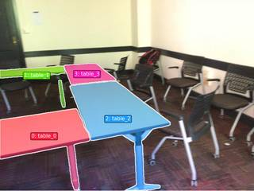

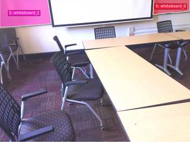
=== Step 1 Execution Feedback ===
[SUCCESS] Code executed in 3.19s.
[Output]
window mask area: 22271 pixels
table mask area: 31715 pixels
whiteboard mask area: 7895 pixels
[Variables] New/changed:
f_window: int
f_table: int
f_whiteboard: int
seg_window: PerFrameMask, frames=[0]
seg_table: PerFrameMask, frames=[5]
seg_whiteboard: PerFrameMask, frames=[9]
vis_window: VisualFeedback
vis_table: VisualFeedback
vis_whiteboard: VisualFeedback
seg: PerFrameMask, frames=[9]
label: str
fi: int
mask: ndarray, shape=(576, 768), dtype=bool
area: int64, shape=(), dtype=int64
[Inline Images] 6 image(s) attached below.
Labels: [
InputImages[f_window], vis_window,
InputImages[f_table], vis_table,
InputImages[f_whiteboard], vis_whiteboard
]
[Tool Calls] 3 tool/VLM call(s) this step.
[show() budget] 244/250 images remaining.# 1. Perform 3D Reconstruction recon = tools.Reconstruct.Reconstruct(InputImages) # 2. Refine Whiteboard Mask in frame 9 f_whiteboard = 9 img_wb = InputImages[f_whiteboard] W, H = img_wb.width, img_wb.height # Get bounding box for the whiteboard wb_box_str = vlm.locate(img_wb, "Give the bounding box (x1, y1, x2, y2) in 0-1000 normalized scale for the large white board on the wall. Reply with ONLY the numbers.") print(f"Whiteboard normalized box string: {wb_box_str}") # Parse the string into a list of integers try: wb_box_norm = [int(x.strip()) for x in wb_box_str.split(',')] except ValueError: # Fallback if there are other characters in the string import re wb_box_norm = [int(x) for x in re.findall(r'\d+', wb_box_str)] # Convert to pixels wb_box_px = tools.Geometry.normalized_to_pixel(wb_box_norm, W, H) print(f"Whiteboard pixel box: {wb_box_px}") # Segment using the box seg_whiteboard_refined = tools.SAM3.segment_image_by_box(img_wb, wb_box_px, label="whiteboard") # Verify the refined mask vis_wb_refined = seg_whiteboard_refined.visualize(seg_whiteboard_refined.frame_indices[0]) show([img_wb, vis_wb_refined]) # Programmatic check fi_wb = seg_whiteboard_refined.frame_indices[0] wb_area = seg_whiteboard_refined.get_mask(frame=fi_wb, object=0).sum() print(f"Refined whiteboard mask area: {wb_area} pixels")
[VLM Q | locate] Before answering, first check whether what the question describes is clearly visible in the provided image(s). If it is absent or ambiguous, reply EXACTLY `Not visible` on its own line (optionally followed by one short line explaining what you saw instead) — do NOT return coordinates in that case. Only if the requested target is clearly and unambiguously present, answer the request below. Request: Give the bounding box (x1, y1, x2, y2) in 0-1000 normalized scale for the large white board on the wall. Reply with ONLY the numbers. [VLM A | locate] 252 0 801 202 Whiteboard normalized box string: 252 0 801 202 Whiteboard pixel box: [193.536, 0.0, 615.168, 116.352] [image: show_0002] Refined whiteboard mask area: 39621 pixels
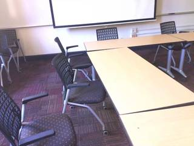
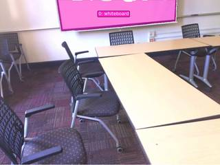
=== Step 3 Execution Feedback === [SUCCESS] Code executed in 7.38s. [Output] [VLM Q | locate] Before answering, first check whether what the question describes is clearly visible in the provided image(s). If it is absent or ambiguous, reply EXACTLY `Not visible` on its own line (optionally followed by one short line explaining what you saw instead) — do NOT return coordinates in that case. Only if the requested target is clearly and unambiguously present, answer the request below. Request: Give the bounding box (x1, y1, x2, y2) in 0-1000 normalized scale for the large white board on the wall. Reply with ONLY the numbers. [VLM A | locate] 252 0 801 202 Whiteboard normalized box string: 252 0 801 202 Whiteboard pixel box: [193.536, 0.0, 615.168, 116.352] Refined whiteboard mask area: 39621 pixels [Variables] New/changed: recon: Reconstruction, frames=[0..10] (11 frames) img_wb: FrameImage W: int H: int wb_box_str: str re: module wb_box_norm: list, len=4 wb_box_px: list, len=4 seg_whiteboard_refined: PerFrameMask, frames=[9] vis_wb_refined: VisualFeedback fi_wb: int wb_area: int64, shape=(), dtype=int64 [Inline Images] 2 image(s) attached below. Labels: [img_wb, vis_wb_refined] [Tool Calls] 4 tool/VLM call(s) this step. [show() budget] 242/250 images remaining.
# 1. Get 3D Centroids # Table (from frame 5) fi_table = seg_table.frame_indices[0] p_table = seg_table.get_centroid_3d(recon, frame=fi_table, object=0) # Window (from frame 0) fi_window = seg_window.frame_indices[0] p_window = seg_window.get_centroid_3d(recon, frame=fi_window, object=0) # Whiteboard (from frame 9) fi_wb = seg_whiteboard_refined.frame_indices[0] p_whiteboard = seg_whiteboard_refined.get_centroid_3d(recon, frame=fi_wb, object=0) print(f"P_table: {p_table}") print(f"P_window: {p_window}") print(f"P_whiteboard: {p_whiteboard}") # 2. Reference Frame Construction # Front vector: from table to window v_front = p_window - p_table v_front_norm = v_front / np.linalg.norm(v_front) # Right vector: Front x Up [0, 1, 0] v_up = np.array([0, 1, 0]) v_right = np.cross(v_front_norm, v_up) v_right_norm = v_right / np.linalg.norm(v_right) # 3. Relative Position Calculation v_target = p_whiteboard - p_table dot_front = np.dot(v_target, v_front_norm) dot_right = np.dot(v_target, v_right_norm) front_back = "front" if dot_front > 0 else "back" left_right = "right" if dot_right > 0 else "left" print(f"Dot Front: {dot_front:.3f} ({front_back})") print(f"Dot Right: {dot_right:.3f} ({left_right})") print(f"Relative Position: {front_back}-{left_right}")
P_table: [-1.3598428 1.2031621 -0.76202554] P_window: [ 0.9969112 1.7155263 -0.8370082] P_whiteboard: [-0.71387523 0.50180614 2.120764 ] Dot Front: 0.392 (front) Dot Right: 2.902 (right) Relative Position: front-right
=== Step 4 Execution Feedback === [SUCCESS] Code executed in 3.43s. [Output] P_table: [-1.3598428 1.2031621 -0.76202554] P_window: [ 0.9969112 1.7155263 -0.8370082] P_whiteboard: [-0.71387523 0.50180614 2.120764 ] Dot Front: 0.392 (front) Dot Right: 2.902 (right) Relative Position: front-right [Variables] New/changed: fi_table: int p_table: ndarray, shape=(3,), dtype=float32 fi_window: int p_window: ndarray, shape=(3,), dtype=float32 p_whiteboard: ndarray, shape=(3,), dtype=float32 v_front: ndarray, shape=(3,), dtype=float32 v_front_norm: ndarray, shape=(3,), dtype=float32 v_up: ndarray, shape=(3,), dtype=int64 v_right: ndarray, shape=(3,), dtype=float64 v_right_norm: ndarray, shape=(3,), dtype=float64 v_target: ndarray, shape=(3,), dtype=float32 dot_front: float32, shape=(), dtype=float32 dot_right: float64, shape=(), dtype=float64 front_back: str left_right: str
# Create a combined segmentation for BEV # Since SAM3 masks are per-frame, we can combine them into a list or a dictionary # for render_bev if we provide the masks and labels. # However, render_bev takes a PerFrameMask or (N, N_obj, H, W) array. # I'll just use the existing masks and a list of labels. # To use render_bev, I need masks for the same set of frames. # I'll create a simple mask array for the reconstructed frames. num_frames = recon.num_frames H, W = recon.depth[recon.frame_indices[0]].shape masks_bev = np.zeros((num_frames, 3, H, W), dtype=bool) labels_bev = ["table", "window", "whiteboard"] # Fill in the masks from our previous segmentations # Note: we must map the absolute frame index to the local index in recon.frame_indices frame_to_local = {fi: i for i, fi in enumerate(recon.frame_indices)} # Table fi_t = seg_table.frame_indices[0] if fi_t in frame_to_local: masks_bev[frame_to_local[fi_t], 0] = seg_table.get_mask(frame=fi_t, object=0) # Window fi_w = seg_window.frame_indices[0] if fi_w in frame_to_local: masks_bev[frame_to_local[fi_w], 1] = seg_window.get_mask(frame=fi_w, object=0) # Whiteboard fi_wb = seg_whiteboard_refined.frame_indices[0] if fi_wb in frame_to_local: masks_bev[frame_to_local[fi_wb], 2] = seg_whiteboard_refined.get_mask(frame=fi_wb, object=0) # Render BEV bev_vis = recon.render_bev(masks=masks_bev, labels=labels_bev) show(bev_vis) # Qualitative VLM check vlm_q = "Look at the images. If a person is sitting at the table and facing the window, where is the whiteboard located relative to them? (e.g., front-left, back-right, etc.)" vlm_a = vlm.ask_with_thinking(InputImages, vlm_q) print(f"VLM Qualitative Answer: {vlm_a}")
[image: show_0003] [VLM Q | thinking] Look at the images. If a person is sitting at the table and facing the window, where is the whiteboard located relative to them? (e.g., front-left, back-right, etc.) [VLM A | thinking] Based on the visual information across the frames: 1. The **windows** are located on the right wall of the room (as seen in frames 0-4). 2. The **whiteboard** is located on the wall opposite the camera's view in frames 8-10, which is perpendicular to the window wall. 3. If a person is sitting at the table and facing the window (facing right), the whiteboard on the adjacent wall would be located to their **left**. VLM Qualitative Answer: Based on the visual information across the frames: 1. The **windows** are located on the right wall of the room (as seen in frames 0-4). 2. The **whiteboard** is located on the wall opposite the camera's view in frames 8-10, which is perpendicular to the window wall. 3. If a person is sitting at the table and facing the window (facing right), the whiteboard on the adjacent wall would be located to their **left**.
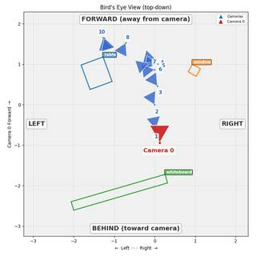
=== Step 5 Execution Feedback === [SUCCESS] Code executed in 38.60s. [Output] [VLM Q | thinking] Look at the images. If a person is sitting at the table and facing the window, where is the whiteboard located relative to them? (e.g., front-left, back-right, etc.) [VLM A | thinking] Based on the visual information across the frames: 1. The **windows** are located on the right wall of the room (as seen in frames 0-4). 2. The **whiteboard** is located on the wall opposite the camera's view in frames 8-10, which is perpendicular to the window wall. 3. If a person is sitting at the table and facing the window (facing right), the whiteboard on the adjacent wall would be located to their **left**. VLM Qualitative Answer: Based on the visual information across the frames: 1. The **windows** are located on the right wall of the room (as seen in frames 0-4). 2. The **whiteboard** is located on the wall opposite the camera's view in frames 8-10, which is perpendicular to the window wall. 3. If a person is sitting at the table and facing the window (facing right), the whiteboard on the adjacent wall would be located to their **left**. [Variables] New/changed: num_frames: int masks_bev: ndarray, shape=(11, 3, 576, 768), dtype=bool, size=14.6MB labels_bev: list, len=3 frame_to_local: dict, len=11, keys=[0, 1, 2, 3, 4]... fi_t: int fi_w: int bev_vis: VisualFeedback vlm_q: str vlm_a: str [Inline Images] 1 image(s) attached below. Labels: bev_vis [Tool Calls] 1 tool/VLM call(s) this step. [show() budget] 241/250 images remaining.
ReturnAnswer("B")
[ReturnAnswer] Answer submitted: B